The Javascript DOM
HTML and CSS are design languages. HTML tells the computer what is displayed, CSS tells the computer how it is displayed. JavaScript on the other hand is a programming language.
You need HTML, CSS and JavaScript to build a house. HTML are the basic building blocks of a house, the walls, doors, roof. A house with plain walls and floors wouldn’t be very nice to live in would it? How is the furniture arranged? That is where CSS comes in. CSS is the design language that decorates your house. It tells the browser what colour the walls are, how the rooms are laid out, and the spacing between the furniture. JavaScript gives your home functionality. When you press a light switch, JavaScript turns the light bult to turn it on. When you turn the tap, JavaScript makes the water run.
Control flow is an important process in JavaScript. It is the process of running a piece of code from the first line to the last. This allows us to write conditionals into our code. A common conditional statement if the ‘if’ statement. When the computer reads the first line of code it has a condition that must be met to run the next line of code, if the condition is not met, the line is omitted. A corresponding ‘else’ statement can be attached, this line of code will be run if the if statement is not met.
| Above: The left section features a simple if conditional statement. If the oatsContainer varable has a value on less than or equal to 0.5, the buyOats() function is run. Basically, if my container of oats is half filled or less, I will buy oats. | Above: The right section features a conditional statement featuring both and if and else. If the priceOfApples variable is less than or equal to 4, the buyApples() function is run. Else, (meaning if priceOfApples is greater than 4) the buyBananas() function is run. This is a simple conditional statement that decides whether I buy apples or bananas based on the price of apples. |
A simple loop function in JavasScript takes three parameters: A variable is defined before the loop, a condition for the loop to run, and a block of code that is executed after each loop. A standard loop using ‘i’ for the variable as this stands for iterator. In the example above, we set the iterator to have a value of 0. The loop above has a condition of ‘i < 5’. This means that the loop will continue to run as long as the iterator is below 5. Finally, the loop above has a third parameter of i++. This is short hand for adding one to i. When the conditions of the loop are met, the function buyTomato() is run.
The first iteration of the loop, the variable ‘i’ is defined as zero. It then passes through the check to see if i is less than 5. It is less than 5, so the function is ran and the iterator is incremented by one. This continues to run until the iterator has a value of 5. The iterator no longer passes the condition of ‘i < 5’ as i is equal to 5, not less than it. The loop ends.
The DOM is a powerful way of interacting with HTML documents using JavaScript. DOM stands for ‘Document Object Model’. The DOM is a document that contains all of the objects that make up the content of structure of a website. This includes all titles, dividers, paragraphs etc etc. An example of how the DOM looks like is above.
The DOM can be manipulated with JavaScript. Writing JavaScript code that manipulates the DOM when certain conditionals are met allows us to build websites that are responsive and have functionality. A simple use of the DOM Is using the InnerHTML function along with onClick(). This allows the text portion of HTML elements to be changed when a button is pressed.